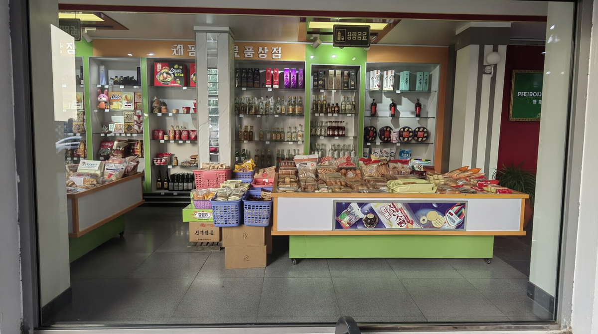
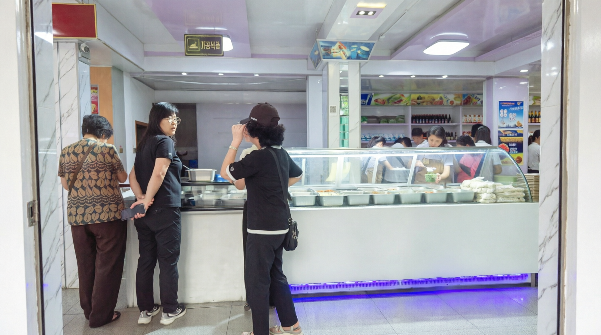
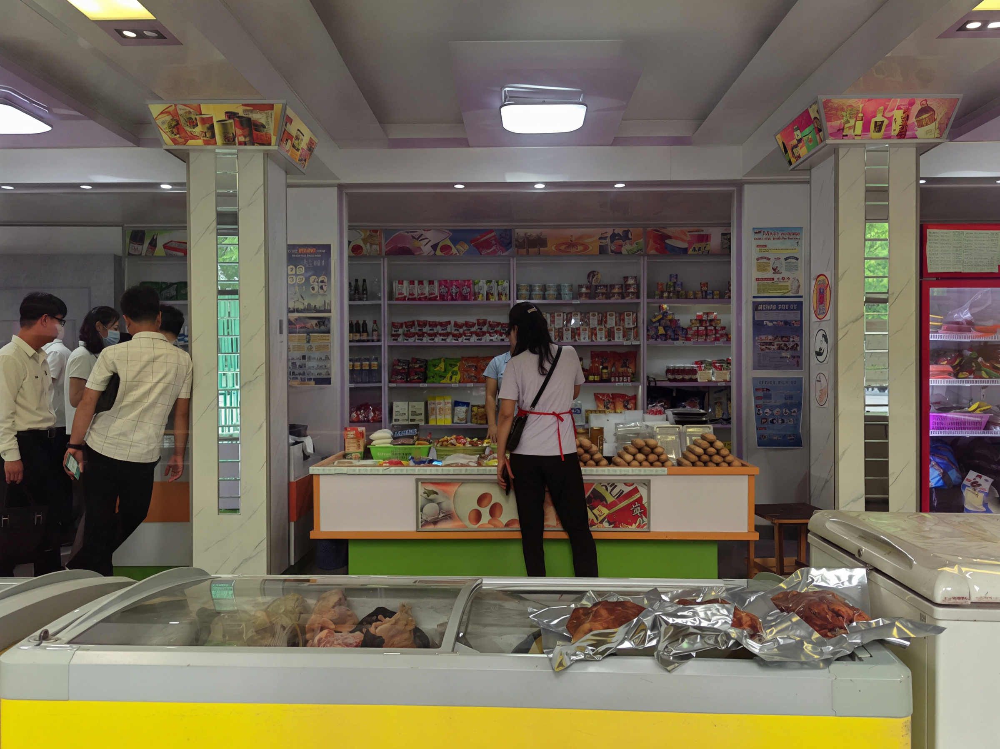
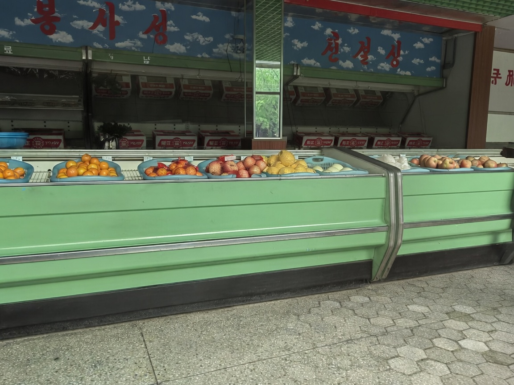

This is a small local store, tucked away from the usual tourist routes. Here, shopping happens in local currency, and the shelves are stocked for residents rather than visitors. Let's take a look inside.

The first display catches the eye with its wide range of bottled drinks — from clear herbal infusions to dark rice wines. Some are packaged as attractive gift sets, tied with twine and placed in baskets. The assortment feels practical and locally oriented, with small jars that might contain pickled seafood or fruit preserves.

The second photo shows a casual food counter — a place where residents grab a quick meal. Women in everyday clothes queue up to see what's on offer that day. Trays are neatly lined up along the counter, featuring simple, hearty dishes. A sign above the entrance reads "VICTORY" — a local label for prepared foods — making it clear that this is where people come for a convenient dinner after work.

The third image reveals a busier part of the store. Shelves stretch deep into the hall, packed with cans, boxes, and bottles — everything from sauces to preserved goods. Fruit liqueurs stand in tight rows alongside everyday staples. Fresh meat is displayed openly in trays, some wrapped in foil, others uncovered — a sign that it's a regular, accessible product rather than a rarity.

The last photo is strikingly straightforward: a bright green produce section with tangerines, melons, and pears laid out in plastic trays. The sign above reads something like "Fruit Section," decorated with playful cloud motifs. No fancy packaging, no imported brands — just fresh, seasonal fruit, presented simply for everyday shoppers.
These photos, taken through shop windows, carry a subtle sense of distance — the reflections and light catching the glass remind us that this is a candid glimpse, not a staged scene. It's not a tourist brochure — just an honest look at daily life: simple, practical, and quietly diverse.